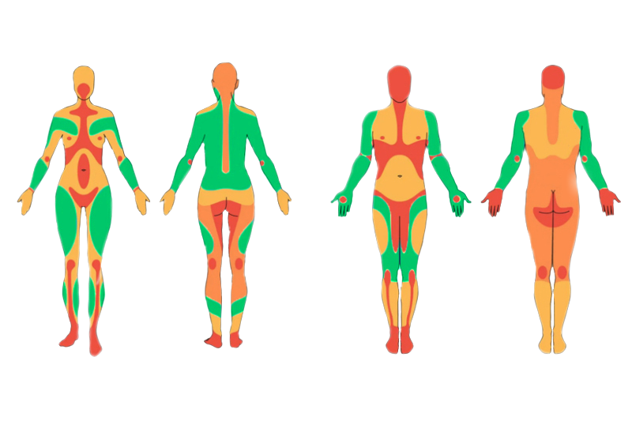

Cómo edad mínima legal son los 18 años, los menores pueden tatuarse siempre que vengan acompañados por uno de sus padres, identificados ambos con el DNI en vigor y el Libro de Familia, tendrán que firmar una autorización expresa junto al consentimiento informado obligatorio por ley.
Los materiales que utilizo son de primera calidad, las agujas y grips son estériles, desechables y de un sólo uso, al igual que el resto del material necesario para la realización del tatuaje; en nuestro estudio no tenemos autoclave,con lo cuál no esterilizamos material, todo viene directamente esterilizado desde el distribuidor, y se abre delante del cliente, conforme a la legislación vigente.
Las tintas utilizadas son las homologadas y permitidas por Sanidad a nivel mundial.
No, no puedes beber antes, ni inmediatamente después de tatuarte. Beber alcohol puede afectar en tu toma de decisiones, no provocará una disminución del dolor, aumentará el sangrado e influirá en el acabado del tatuaje y su cicatrización.
Las técnicas de borrado por medio de láser ya están muy avanzadas, y si se pueden borrar en función del tatuaje y número de sesiones de láser, pero deberás informarte en un centro homologado y especializado donde apliquen esas técnicas y te puedan orientar correctamente
Es acertado intuir que a más complejidad y detalle habrá más horas de trabajo. Por ejemplo, un tatuaje pequeño y lineal toma mínimo 20 minutos a 1 hora, un diseño con complejidad media puede tomar de 2 a 3 horas y se hablará de sesiones cuando se superan las horas de trabajo. Estas estimaciones sirven puramente como punto de referencia
Lo ideal es que el cliente haga una investigacion previa recopilando imágenes sueltas de cosas que se acerquen a lo que tiene en mente, esto ayuda mucho a tener una plano visual de una idea, con este material puedo crear un diseño para luego una vez que esté el definitivo se pueda llevar a cabo el tatuaje en la parte del cuerpo seleccionada.
El dolor varía según la persona y la ubicación del tatuaje. Algunas áreas del cuerpo son más sensibles que otras. En la gráfica se muestra un rango de dolor general:
| Poco | Moderado | Intenso | Muy Intenso |